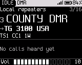

Radio Reference
The rest of this manual describes what RadioFoundry does on every radio. This chapter lists what differs from radio to radio: which physical key does each job, the power levels, the battery, the power switch, the display, what a radio lacks, and what has been checked on it.
| Radio | Also sold as | What works |
|---|---|---|
| Baofeng DM-32UV | FM and DMR voice both ways, CTCSS/DCS, APRS both ways, GPS data, the hotspot and each split duplex half work on air. Open: FM deviation at 12.5 kHz and an outdoor GPS fix. | |
| Baofeng DM-1701 | Retevis RT84 | FM, DMR voice and data, text messages, alerts, emergency, scan, the hotspot, single frequency repeating, each split duplex half and the USB network services work on air. Open: standalone SFR and a two-radio split duplex pair. |
| Baofeng DM-1801 Pro | Baofeng DM-1801 | FM with CTCSS/DCS, DMR voice with the radio's own codec, DMR data and text, the hotspot, single frequency repeating, the PPP network services and each split duplex half work on air. Open: VHF transmit and VOX. |
| Radioddity DB25-D PRO | Kydera CDR-300UV | FM and DMR voice both ways, the hotspot, the DMR VFO, the PPP network services, cable programming and settings storage work on the radio. The older FD6818 batches run the same image, untested on a radio. Open: the Retevis RT73. |
| TYT MD-380 | TYT MD-390, Retevis RT3 | FM with CTCSS both ways, DMR voice and SMS in simplex and through a repeater or hotspot on either slot, and codeplug and ID database programming work on a UHF radio. Open: DCS, the tone deviation and the untested VHF image. |
| TYT MD-UV380 | TYT MD-UV390, Retevis RT3S, TYT MD-UV390 Plus 10 W | Built on the UV380 family code, with the MD-UV380's keys, display, power tables and GPS. Run on radios by community testers. |
| TYT MD-9600 | Retevis RT90 | One image serves every board revision. On a V1-V3 radio, FM and DMR on both bands, DMR voice and data, text messages, roaming, scan, dual watch, APRS, the hotspot, each split duplex half and the USB network services work on air, with every power level checked on a wattmeter on both bands. V4A/V5 boards are detected; on older boards the radio asks for the revision once. Open: V4 and V4A/V5 boards have not run on a radio, and SFR loses inbound voice frames. |
| Retevis RT10 | Boots from the boot ROM with the host link, stub entry, the watchdog and the crash log. FM receive with CTCSS/DCS decode, FM transmit, DMR transmit and receive with the radio's own codec, P25 (conventional, and trunked transmit) and NXDN at 4800 bit/s on stored channels, and APRS transmit work on the radio. |
Planned radios lists the radios that aren't built yet.
Key roles
The manual names keys by the job they do. Each radio puts those jobs on its own keys:
| Name in this manual | Job (press / hold) | DM-1701 | MD-380 | MD-UV380 | DM-32UV | DB25-D PRO | DM-1801 Pro |
|---|---|---|---|---|---|---|---|
| OK | Open or choose / save, make permanent | Green Menu key | Green Menu key | Green Menu key | Green Menu / OK key | Menu / OK key, or push the knob | Menu key |
| Back | Back one level / Home | Red Back key | Red Back key | Red Back key | Red Back key | B/E key | Back key |
| Up, Down | Move the focus / repeat | Arrow keys | Arrow keys | Arrow keys | Up and Down keys | None: turn the knob | Up and Down keys |
| * | Quick settings / lock or unlock the keys | * | * | * | * | P1 | * |
| # | Actions / Recent | # | # | # | # | P2 | # |
| 0 to 9 | Number keys | Number keys | Number keys | Number keys | Number keys | None | Number keys |
| Monitor | FM: squelch open while held. DMR: digital monitor on / off | SK1 | SK1 | SK1 | SK1 | P3 | SK1 |
| Talk target | Talk target picker | Hold # | Hold # | Hold # | Hold # | Hold P2 | Hold # |
| A/B | Dual watch: the other channel / dual watch on or off | SK2 | SK2 | SK2 | SK2 | TONE/T.SEL | A/B key, SK2 |
| Power level | Next power level / emergency (held 1.5 s) | SK3 | None | None | None | None | None |
| Previous zone, Next zone | Step the zone on Home | P1, P2 | None | None | P1, P2 | None | Left, Right |
| VFO | Between the channel and the VFO / copy the channel to the VFO | None | None | None | None | None | VFO/MR key |
| Volume | Open the volume editor. Radios without a volume knob only | None: the knob | None: the knob | None: the knob | None: the knob | VOL/SQL | None: the knob |
| PTT | Transmit | PTT | PTT | PTT | PTT | PTT on the microphone | PTT |
| Channel knob | One step per click | Channel knob | Channel switch (16 positions) | Channel knob | Channel knob | Front knob | None: Up and Down |
These are the defaults. Settings > Keys can give other jobs to every key the menus don't need (Settings):
| Radio | Keys you can set |
|---|---|
| DM-1701 | SK1, SK2, SK3, P1, P2 |
| MD-380 | SK1, SK2 |
| MD-UV380 | SK1, SK2 |
| DM-32UV | SK1, SK2, and P1, P2 on Home |
| DB25-D PRO | P3, TONE/T.SEL, the microphone's P4 and P5 |
| DM-1801 Pro | SK1, SK2, SOS, A/B, VFO/MR |
OK, Back, the arrows, the number keys, *, #, PTT and the volume stay as they are. Where the arrows are printed P1 and P2 (DM-32UV), what you set for them works on Home only: in the menus they stay left and right. On the DB25-D PRO that includes P1, P2 and the microphone's P6 and P7, which are * and # there.
The hints at the bottom of the screen use these names. A radio that knows its own name for a key shows that instead (the MD-9600 shows "P1 Quick", not "* Quick"), and a radio without number keys leaves out hints that need them.
On a radio without a key for a job, the menus reach it:
| Job | Without the key |
|---|---|
| Power level | *, 1 (quick settings, Power) |
| Change the zone | OK, 4 (Zones), pick a zone |
| Talk target | *, 8 |
| Monitor | *, 5 latches it |
| Emergency | No other way on the radio yet |
Dual watch on each radio
Dual watch listens on two channels, A and B. Every radio built today has one receiver, so
on every radio it is pseudo dual watch: the radio alternates between A and B. A call on one channel can be missed
while the radio is on the other. A radio with two receivers would hear both and show a call on each at once. The UI is ready for that (ui_svc_receivers() above 1), but no radio reports two receivers
yet, and the core doesn't use them.
| Radio | Dual watch | Start | Switch A / B |
|---|---|---|---|
| DM-1701 | Pseudo, one receiver. The core's alternation between two channels of one zone is checked on air; the new dual watch (any zone, the VFO, the screens) is not yet | *, 7, or hold SK2 | SK2 (a press), #, 1 |
| MD-380 | Pseudo, one receiver. Not checked on air | *, 7, or hold SK2 | SK2 (a press), #, 1 |
| MD-UV380 | Pseudo, one receiver (one AT1846S for both bands). Not checked on air | *, 7, or hold SK2 | SK2 (a press), #, 1 |
| DM-32UV | Pseudo, one receiver. Not checked on air (scan isn't checked on this radio yet) | *, 7, or hold SK2 | SK2 (a press), Left / Right |
| DB25-D PRO | Pseudo, one receiver. Not checked on air. Its second BK4819 chip is a local oscillator for the receive chain, not a second receiver | Hold the TONE/T.SEL key | A press of TONE/T.SEL |
| DM-1801 Pro | Pseudo, one receiver. Not checked on air | Hold the A/B key, *, 7, or hold SK2 | The A/B key or SK2 (a press), Left / Right |
Holding SK2 is dual watch on every radio that has an SK2, and on the DB25-D PRO holding the tone key is. A press of SK2 (the tone key on the DB25-D PRO) switches A / B, and with dual watch off says "Turn on dual watch first". The DM-1801 Pro's A/B key does both: a press switches A / B, a hold starts and stops dual watch. On it the zones are on Left / Right, or in the Zones menu.
A and B can be any channel of any zone, or the VFO (how the core does it). Nothing about this dual watch has been checked on the air on any radio.
The Anytone AT-D578UV is the radio the two-receiver case is for: its hardware has two receiver chips (Anytone hardware notes). RadioFoundry has no board for it, so there is no support.
The volume bar
On a radio whose volume knob RadioFoundry reads, turning the knob shows the volume at the bottom of the screen (at the
top on a screen that uses its bottom row, such as Quick settings): a bar of 16 steps and the step number. It goes away 3 s after you stop turning, and the screen under it carries on (a call,
a menu). It also turns the backlight on. On a radio without a knob, the Volume key opens the volume screen
instead. A radio whose volume control works after the radio chip (volume.src none) can't know the level, and shows
nothing.

Setting the volume from a PC
rfoundry_debug.py volume prints the volume the radio uses and where it comes from. rfoundry_debug.py volume 12 sets step 12
of 16 (0 is mute), and rfoundry_debug.py volume knob gives the knob back (over the serial cable of the DM-32UV, add
--port /dev/ttyUSB1 or the port of your cable). What this does depends on the radio:
| Radio | Volume from a PC |
|---|---|
| DM-1701 | Yes. The radio reads the knob and sets the audio gain itself, so the PC's level replaces the knob's until you send knob or restart the radio. It is not saved |
| MD-380 | No. The knob works on the audio path directly; the radio answers "not supported" |
| MD-UV380 | Yes, as on the DM-1701 (the same audio path). Not checked on a radio |
| DM-32UV | No. The knob works on the audio amplifier directly; the radio answers "not supported" |
| DB25-D PRO | Yes. There is no knob: the level is the radio's own volume setting, so the PC changes that setting and it is saved, as if you had set it on the radio. knob puts it back to the default (step 8) |
Programming
The Codeplug Editor programs every radio below. qdmr needs a radio on the port and addresses its driver knows.
| Radio | Cable | qdmr |
|---|---|---|
| DM-1701 | USB | Radio type 8 (10 on the other screen variant). qdmr's driver for the UV380 family |
| MD-380 | USB | Radio type 7 |
| DM-32UV | Programming cable (no USB) | Can't program it directly. RadioFoundry keeps the codeplug 7 MB into the radio's data flash, so the addresses qdmr's driver uses land in the stock area, where RadioFoundry refuses writes. Edit the codeplug in qdmr, save it as YAML, and write it with dm32_migrate.py restore --yaml FILE (Moving from stock DM-32UV firmware), which adds the offset. The radio reports radio type 6 (MD-UV380) for now |
| DB25-D PRO | Programming cable, K1 jack (below) | Reports type 6. The codeplug sits at the DM-1701's addresses, so qdmr's MD-UV380 driver should work. Not tried |
| DM-1801 Pro | Programming cable | Not listed |
Codeplug files from the original firmware
The Codeplug Editor converts these when you open them (Files).
| Radio | Files it opens | Convert first |
|---|---|---|
| DM-1701, RT84 | The web installer's backup, a dump of the radio's data flash | The manufacturer's MD-UV380 family CPS file (.rdt): dmrconf decode --manufacturer --radio dm1701 FILE.rdt FILE.yaml, then open the YAML |
| MD-380, MD-390, RT3 | The web installer's backup, a dump of the radio's data flash, the manufacturer's CPS file (.rdt) |
|
| DM-32UV | The web installer's backup taken on the stock firmware, its data-memory.bin or original-channels.bin (the first 84 channels) |
Past 84 channels, or offline: tools/backup_codeplug.py BACKUP.zip -o DIR, then open DIR/<name>-ported.yaml (From a web installer backup) |
Baofeng DM-1701
Also sold as the Retevis RT84. A handheld for 136-174 and 400-480 MHz with a keypad, a channel knob, a volume knob with the power switch, three side keys and a color screen.
Installing on the DM-1701
Follow Installing with these values:
| Item | DM-1701 |
|---|---|
| Stock firmware file | Baofeng's DM-1701(CSV)-V02.06.bin or DM-1701(noCSV)-V02.06.bin (V02.06), or Radioddity's V02.01, V02.02 or V02.03 file (Firmware-DM-1701(CSV)-V02.01.bin, DM-1701(CSV)-V02.02.bin, DM-1701(CSV)-V02.03 Only for Radioddity.bin, DM-1701-V02.03 Only for Radioddity.bin). Each gives the bootloader key and the voice codec. An archive of V02.06 is at github.com/daniel5600/BAOFENG-DM1701-Original-Firmware (the list) |
| MD-9600 files | Any TYT MD-9600 V16.45 or V06.09 file (MD9600-CSV(V4)-V16.45.bin and the rest) gives the voice codec, the one an OpenGD77-family install leaves on the radio. It does not give the bootloader key and is never written back as the radio's firmware: also select a DM-1701 file, or read the radio first (Another open firmware, which finds this codec in the radio). Details |
--stock-installed |
The version the radio runs, e.g. "V02.06 CSV" |
| Bootloader keys | Hold PTT and SK1 together while you turn the radio on with the volume knob |
| Bootloader USB device (Zadig) | "Digital Radio in USB mode" (0483:DF11), driver steps |
| Board name | dm1701 |
| Going back to stock | Baofeng's firmware upgrade tool, in the stock firmware archive. It writes the application and the resource area the stock firmware keeps in the SPI flash |
DM-1701 keys
| Key | Where | Role |
|---|---|---|
| Green Menu key | Keypad | OK |
| Red Back key | Keypad | Back |
| Arrow keys | Keypad | Up, Down |
| P1, P2 | The two front function keys | Previous zone, Next zone |
| SK1 | The top side key, above PTT | Monitor. Held with PTT at power-on, it starts the bootloader |
| SK2 | The side key below PTT | A/B: press to switch A / B in dual watch, hold for dual watch on or off. The talk target picker is on hold # |
| SK3 | The lowest side key | Power level. Press: the next power level. Hold 1.5 s: emergency. A build without emergency says "Voice prompts: not in this build" on a hold |
| PTT | PTT | |
| Channel knob | Channel knob |
The side keys are, top to bottom, SK1, PTT, SK2 and SK3.
DM-1701 power levels
Five levels: 100 mW, 500 mW, 1 W, 2.5 W, 5 W. The values are nominal and use the radio's factory calibration. They haven't been measured with a wattmeter.
| Way to change it | Levels |
|---|---|
| A channel without a power in the codeplug | 1 W |
| *, 1 | 100 mW, 1 W, 5 W |
| SK3 on Home | All five, one per press |
DM-1701 battery
A 2-cell Li-ion pack. The percentage follows the resting voltage, 4.10 V a cell for full and 3.20 V for empty. It hasn't been checked against a meter yet.
| Level | Below |
|---|---|
| Low | 6.2 V |
| Critical | 6.0 V |
DM-1701 power switch
The power switch is on the volume knob. Turn it clockwise past the click to switch on, counterclockwise to the click to switch off. The switch cuts the battery sense line, so the radio sees "off" as a reading below 5.5 V, finishes what it is doing, saves and drops its own power. A deeply discharged battery reads the same way and the radio shuts down.
Whether the radio can cut its own power while the knob is still on (auto power off) hasn't been checked. If it can't, the radio comes back after 2 s and shows "Couldn't switch off / Turn the knob off".
DM-1701 display
A 160 x 128 color screen with the top 8 rows hidden: 160 x 120 visible. The screenshots in this manual are this size.
What the DM-1701 lacks
- No GPS from the factory. LRRP location requests get "no fix". APRS positions come from a computer or a fixed position. If you fit a GPS module yourself, wire its NMEA output to PA10 (STM32 pin 69) and its power enable, if it has one, to PA9. The radio finds it at start-up (hardware-dm1701.md 14.2) and powers it only while Settings > Location > GPS is on.
- APRS receive needs the squelch open: the radio hears packets strong enough to open the squelch, not weaker ones.
- No APRS iGate (passing heard packets to APRS-IS): it doesn't fit in the flash yet.
- No vibration motor: Settings > Sound > Vibrate isn't in the image.
Verified on the DM-1701
Tested on one DM-1701, on air against the SDR bench where RF is involved:
| Area | Verified |
|---|---|
| Basics | Boot, display, keys, calibration |
| FM | Receive and transmit at 12.5 and 25 kHz, CTCSS and DCS tones, 1750 Hz burst, roger beep |
| DMR voice | Group and private calls both ways, late entry, talker alias, positions in calls, the basic privacy signaling (the scrambling itself hasn't been checked against another radio) |
| DMR data | Text messages, call alert, radio check, emergency, all both ways |
| Scan | Zone scan (including stopping for DMR calls), VFO band scan, dual watch (the core alternating two channels of one zone; dual watch with any zone and the VFO is not yet) |
| Hotspot | Voice and data calls both ways. MMDVM SFR repeats a whole call, about 210 ms after the original instead of the intended 90 ms |
| Standalone SFR | As a user: talks through a DM-32UV repeater and plays its calls whole. It hears one copy of a call at a time, so SFR receive "First copy" and "Dual-path RX" only switch to the other copy between calls, never mix them |
| APRS | Packets sent on FM and over DMR decode off air |
| Power | Battery saver: it cycles when idle, and monitor and an incoming call wake it |
| Programming | Codeplug reads and writes with qdmr's protocol (tools/cps_client.py) |
| USB network | The switch to network mode, the address from the computer (macOS) and ping |
Partly checked: VOX. Silence and the radio's own beeps don't key it. Keying on a voice hasn't been checked. Each half of the split duplex repeater passes on air with one radio; a real pair of radios hasn't been tested. Host-tested only: IP over DMR to another radio and the services in USB network mode, control station mode, roaming, ARS and LRRP.
TYT MD-380
Covers the TYT MD-380, the MD-390 and the Retevis RT3. Fully operational on a UHF radio: FM, DMR in simplex and through a repeater or duplex hotspot, and programming. The VHF image is untested. Installing: Moving from stock MD-380 firmware.
Check your frequency. Two MD-380s measured 2 to 2.5 kHz high on receive and transmit, enough that an MMDVM hotspot never decoded them. Confirm yours against an external reference (a frequency counter, a service monitor, or a hotspot's MMDVMCal BER test), then correct it with Settings > Advanced > Freq trim: enter the error with the sign reversed (2 kHz high at 448.7 MHz: -4.5 ppm). With that the first radio decodes on the hotspot at BER under 0.1 %.
Installing on the MD-380
Follow Installing with these values. To keep the stock codeplug while you move, see Moving from stock MD-380 firmware.
| Item | MD-380 |
|---|---|
| Stock firmware file | The manufacturer's MD-380-D2.32(AD).bin (D002.032), or TYT's TYT-72310-11-MD380-D35.14.bin (D35.14) or TYT-72310-11-MD390-S35.14.bin (S35.14). It gives the bootloader key and the voice codec. The archive at md380.org/firmware/orig/ has every release |
| Bootloader keys | Hold PTT and the side key just above it while you turn the radio on |
| Images | One per band: UHF and VHF. rfoundry takes --option BAND=vhf |
| Bootloader USB device (Zadig) | "Digital Radio in USB mode" (0483:DF11), driver steps |
| Board name | md380 |
MD-380 keys
| Key | Role |
|---|---|
| Green Menu key | OK |
| Red Back key | Back |
| Arrow keys | Up, Down |
| SK1 | Monitor |
| SK2 | A/B |
| PTT | PTT |
| Channel switch | Channel knob. A 16-position switch, not an endless knob: RadioFoundry turns each change of position into steps |
No P1, P2 or SK3, so no Power level or zone keys and no emergency key. Change the zone with OK, 4, the power with *, 1. Where each key sits in the key matrix hasn't been confirmed on a radio. The bootloader starts when you hold PTT and the side key just above it at power-on.
MD-380 bands and power levels
One band per radio: UHF (400-480 MHz) or VHF (136-174 MHz). There is one image for each band, and an image refuses the other band.
Five power levels: 100 mW, 500 mW, 1 W, 2.5 W, 5 W. 1 W and 5 W are the factory calibration's; the others are set from them and haven't been measured with a wattmeter. A channel without a power in the codeplug uses 1 W. *, 1 steps through 100 mW, 1 W and 5 W. The radio refuses to transmit without a valid factory calibration.
MD-380 battery
A 2-cell Li-ion pack, with the same percentage curve and the same thresholds as the DM-1701: low below 6.2 V, critical below 6.0 V. The voltage scale is assumed, not measured.
MD-380 power switch
The power switch is on the volume knob. It is believed to switch the supply directly, so RadioFoundry doesn't see the knob turn off. When RadioFoundry switches itself off (auto power off), it drops its power latch. Unchecked on a radio.
MD-380 display
A 160 x 128 color screen, every row visible. The controller type is unconfirmed.
What the MD-380 lacks
- CTCSS works on air both ways. DCS isn't checked on a radio yet. A build with
CONFIG_SUBTONE=n(build switches) opens a channel with a tone on any carrier and sends no tone. - No roger beep, 1750 Hz burst or APRS on FM (the transmit tone path isn't written). APRS positions over DMR work.
- No APRS receive.
- MMDVM SFR and the split duplex repeater need the DMR chip of the DM-1701 (HR_C6000) and aren't built for the MD-380 (HR_C5000). Hotspot mode is in.
- USB network mode and its services are in.
- Audio linking (USRP, USB network) carries DMR only: the FM transmit path from the processor isn't written.
- GPS only on the "G" models. The radio listens for the GPS module for 5 s at start-up and hides the GPS features if it hears nothing. Once heard, the module is powered only while Settings > Location > GPS is on, which takes effect at once.
- No vibration motor: Settings > Sound > Vibrate isn't in the image.
- Some early VHF radios have a 1 MB memory chip instead of 16 MB. RadioFoundry keeps settings and the codeplug on it as on other radios; the DMR ID database is limited to what fits.
TYT MD-UV380
Covers the TYT MD-UV380, the MD-UV390, the Retevis RT3S and the MD-UV390 Plus 10 W, with or without GPS. In bring-up: nothing has run on a radio yet. It is the DM-1701's board design, and the image is built from the DM-1701's code with this radio's keys, display, power tables and GPS (bring-up checklist).
Installing on the MD-UV380
Follow Installing with these values.
| Item | MD-UV380 |
|---|---|
| Stock firmware file | Any supported TYT or Retevis file: 18.11, 18.16, 19.06, 19.26, 19.74, 219.60 or 219.74 (the list). It gives the bootloader key and the voice codec; the codec is the same in all of them, so any of them works on any of these radios |
| Bootloader keys | Hold PTT and the side key just above it (SK1) while you turn the radio on |
| Images | Two: 5 W (the MD-UV380, MD-UV390 and RT3S) and 10 W (the MD-UV390 Plus). rfoundry takes --option POWER=10w. Pick by the label on the radio or its box: the two versions swap the transmitter's band select and the backlight pins, and the radio can't yet tell them apart, so a wrong image isn't caught |
| Bootloader USB device (Zadig) | "Digital Radio in USB mode" (0483:DF11), driver steps (assumed the same as the DM-1701's) |
| Board name | mduv380 |
MD-UV380 keys
| Key | Role |
|---|---|
| Green Menu key | OK |
| Red Back key | Back |
| Arrow keys | Up, Down |
| SK1 (upper side key) | Monitor |
| SK2 (lower side key) | A/B |
| PTT | PTT |
| Channel knob | Channel knob |
No P1, P2, SK3 or top key, so no Power level or zone keys and no emergency key. Change the zone with OK, 4, the power with *, 1.
MD-UV380 power levels
Nine levels: 50 mW, 250 mW, 500 mW, 750 mW, 1 W, 2 W, 3 W, 4 W, 5 W. On the MD-UV390 Plus 10 W image the top four are 2, 3, 5 and 10 W. A channel without a power in the codeplug uses 1 W. The radio refuses to transmit without a valid factory calibration.
MD-UV380 battery
A 2-cell Li-ion pack, with the DM-1701's percentage curve and thresholds: low below 6.2 V, critical below 6.0 V. The voltage scale is the MD-UV380's, unchecked on a radio.
MD-UV380 power switch
As on the DM-1701: the switch is on the volume knob, and RadioFoundry sees it turn off through the battery line.
MD-UV380 display
A 160 x 128 color screen, every row visible.
What the MD-UV380 lacks
- No vibration motor: Settings > Sound > Vibrate isn't in the image.
- GPS only on the G models. The radio powers the module for 5 s at start-up and hides the GPS features if it hears nothing; then the module is switched off again. Once heard, the module is powered only while Settings > Location > GPS is on, which takes effect at once.
- Nothing is checked on a radio yet: treat every function as untested.
Baofeng DM-32UV
A handheld for 136-174 and 400-480 MHz with a keypad, left and right arrow keys, a channel knob and a color screen. FM and DMR voice both ways, CTCSS and DCS, APRS, GPS data, the hotspot and the battery saver work on the radio. As a standalone SFR repeater it repeats calls on air 90 ms later and sends its CW ID; its repeated voice carries more bit errors than the original, though it plays. Installing: Moving from stock DM-32UV firmware.
Installing on the DM-32UV
Follow Installing with these values. To keep the stock codeplug while you move, see Moving from stock DM-32UV firmware.
| Item | DM-32UV |
|---|---|
| Stock firmware file | The manufacturer's DM32.01.01.049.bin |
| Cable | The USB-serial programming cable. The radio has no USB of its own |
| Update mode | Hold PTT and SK1 while you switch the radio on. The green LED lights |
| If the cable can't prepare the radio | Use Factory Update Mode: the update mode above, with the stock firmware file for the codec. It takes about 2.5 minutes, and the radio restarts by itself. The install itself worked on a DM-32UV (2026-10-26); the web installer's own steps are still untested on a radio |
| Board name | dm32 |
DM-32UV keys
| Key | Role |
|---|---|
| Green Menu / OK key | OK |
| Red Back key | Back |
| Up, Down | Up, Down |
| P1, P2 (left and right on the 4-way key) | On Home, press or hold: Previous zone, Next zone, or what Settings > Keys sets for them. Left and right in the menus |
| SK1 (the side key below PTT) | Monitor. Held with PTT at power-on, it starts the bootloader |
| SK2 | A/B |
| PTT | PTT |
| Channel knob | Channel knob |
No Power level key and no emergency key by default. Give them to P1 or P2 in Settings > Keys (emergency on a hold), or change the power with *, 1.
DM-32UV power levels
Five levels, L-, L, M, M+, H, from the radio's factory calibration. The radio is rated 5 W (VHF) and 4 W (UHF) at high power. The levels haven't been measured. A channel without a power in the codeplug uses L. *, 1 steps through L-, L and H.
DM-32UV battery
The percentage is linear from 6.4 V (0 %) to 8.2 V (100 %). There are no voltage thresholds: only the percentage warning (Settings > Power saving > Low battery warning) applies, and a low battery never stops a transmission.
DM-32UV power switch
The power switch is on the knob. The radio sees it turn off (three readings in a row), saves and drops its own power. The volume control works on the audio amplifier directly. RadioFoundry doesn't read it and can't set it from a PC either.
DM-32UV display
A 240 x 320 color screen. RadioFoundry uses its full resolution, with smooth (anti-aliased) bold text one size larger than on other 240 x 320 radios.
What the DM-32UV lacks
- On the newer RF section (the diagnostics line ends in
rf B), no air band AM receive yet: an AM channel plays as FM. - Split duplex repeater: each half passes on air with one radio (the transmit half's outbound with its CACH, a host-fed voice call, 5 minutes keyed within 60 Hz; the receive half's slot labels). As the receive half of a pair with a DM-1801 Pro transmitting, it labeled a subscriber's calls with the right slot in 29 of 31 sessions; the other two aren't explained yet. Not tried as the transmit half of a pair.
- Not checked on this radio yet: emergency, basic privacy, talker alias, text and data messages, roaming, scan, MMDVM SFR, the network services over PPP and control station mode. They are built in and host tested.
- No USB. The serial port is on the programming cable: hotspot mode, the debug link and the network (PPP, USB network) all run there. USB network mode isn't available.
- The GPS module is checked at start-up (it must answer within 5 s) and is then powered only while Settings > Location > GPS is on, which takes effect at once. A fix outdoors hasn't been checked yet.
- While APRS listens, FM on the APRS frequency plays through a different audio path, which may sound different.
- Air band and FM broadcast receive (Air band and FM broadcast) are built in but not checked on the radio yet. Broadcast covers 65 to 108 MHz.
- No VOX yet: the board code that reads the microphone level isn't written.
- Audio linking (USRP) carries DMR only: the FM transmit path from the processor isn't written.
- No beeps while transmitting: the radio's beep path would put them on the air. A beep still playing when the transmission ends is heard from then on. The DMR talk permit tone is a single short beep played just before the radio transmits, while the screen shows ADMITTED (DMR).
- The signal strength in dBm is uncalibrated: strong signals read high.
- No vibration alerts: RadioFoundry doesn't drive a vibration motor on it, and Settings > Sound > Vibrate isn't in the image.
Radioddity DB25-D PRO
A mobile radio for 136-174 and 400-480 MHz with a front knob, a few front keys and a hand microphone. FM and DMR voice both ways, the hotspot, the DMR VFO and the network services work on the radio. It is installed with the radio programming utility only.
Which DB25-D. Open the radio's Version screen. The version reads like 909E.DBB.EARSAB.020; the letters
after 909E. name the hardware.
| Code | Hardware | RadioFoundry |
|---|---|---|
| DBB | DB25-D PRO: two BK4819 (2024 on) | Supported |
| D64 | FD6818 transceiver, 0x7813 LO (2021 to 2023) | Testing: the same image, untested on this hardware |
| D66 | FD6818 transceiver and LO (2021 to 2023) | Testing: the same image, untested on this hardware |
| D6T | FD6818 transceiver, AT1141 LO (2021 to 2023) | Testing: the same image, untested on this hardware |
One image runs on every batch: it reads which RF chips the radio has when it starts. Tools > Diagnostics shows them
(rf line). If you install it on a D64, D66 or D6T, a report of what works and what doesn't helps the project.
The radio programming utility reads the code from the radio before it writes, and asks for it when only the factory update mode answers. On vendor firmware older than the 2025-01-21 build a backup is not proven: the utility offers to try it anyway (nothing is written to the radio's flash; if it fails, switch the radio off and on), to update the vendor firmware first, or to install without a backup. The same try runs from Back Up. A backup made that way can be sent to the project with a report, so the next version knows that firmware. Back Up works on every hardware version, including one RadioFoundry doesn't run on yet: it only reads the radio.
Installing the DB25-D PRO
The radio programming utility on the web site installs and updates this radio over the programming cable (K1 jack). There is no rfoundry route.
| The radio runs | What the radio programming utility does |
|---|---|
| The original firmware (909E.DBB.EARSAB.018 or .020) | Switches the radio to update mode through the original firmware's diagnostic console: about 4 minutes, with no keys and nothing written to the radio's memory. Then it backs up the whole 2 MB program memory (about a minute), installs, and restarts the radio, as for a radio that runs RadioFoundry. The voice codec is taken from the backup when the version is 020 or one of the 018 builds (2024-05-09 or later). For any other version the backup is still complete; the utility says so and asks for a stock 018 file from the manufacturer, whose codec works on every version |
| Another version of the original firmware, or a radio that does not start | Installs through the factory update mode of the original loader: turn the radio off, hold P1 and press power. The red LED lights and the display stays blank. No backup is taken this way. The loader itself is never written |
| RadioFoundry | Hands over to a loader in RAM over the debug link (no keys, no power cycle), writes only the changed sectors and restarts the radio. The backup of the program memory is optional |
| RadioFoundry that does not answer | "Recover at Power-On": the first stage answers for half a second at every power-on, and the radio programming utility loads the loader then |
A radio that shows a white, backlit screen and a solid red LED at every power-on, without P1 held, is stuck in the factory update mode because its application is missing or incomplete. It needs no keys: the utility asks the loader a read-only question, says that the radio is in update mode and installs. Nothing is written to find this out.
When nothing answers on the cable, Troubleshooting offers "Reinstall in Factory Update Mode", and Restore puts a backup back through the factory update mode the same way. Restore through the console or RadioFoundry is the normal route; the factory update mode is the way back when neither answers.
The channels and contacts in the radio's NAND memory are not part of the radio programming utility's
backup; back them up with the manufacturer's programming software or tools/cps_client.py (below).
DB25-D PRO keys
The front keys' positions in the key matrix are provisional until checked on a radio. The hand microphone's keys aren't decoded yet, so there are no number keys.
| Key | Role |
|---|---|
| Menu / OK, or push the knob | OK |
| B/E | Back |
| P1 | * |
| P2 | # |
| P3 | Monitor |
| TONE/T.SEL | A/B |
| VOL/SQL | Volume |
| PTT on the microphone | PTT |
| Front knob | Channel knob, and Up / Down in lists |
| Power key | Press to switch on. Hold 2 s to switch off. Hold P1 while you press it to start the bootloader (the red LED lights and the screen stays blank) |
The microphone's PTT counts once the radio has seen a microphone in the front jack. The radio can run without one and doesn't transmit, and a microphone plugged in later works from then on. Unplugging the microphone while the radio is on reads as a held PTT: the radio transmits until the transmit timeout, or with TX timeout Off until it is switched off. Switch the radio off before unplugging the microphone.
DB25-D PRO power and supply
Five levels: L--, L-, L, M, H. L and H (nominal 20 W) are the factory calibration's; the others are set from them and haven't been measured. A channel without a power in the codeplug uses L. The radio refuses to transmit until RadioFoundry can read its power calibration.
The radio runs from a 13.8 V supply and has no battery. The status line shows no battery icon or percentage, Tools has no Battery page, and Settings > Power saving has no Battery saver or Low battery warning. RadioFoundry doesn't read the supply voltage, so nothing warns about it.
DB25-D PRO display
A 1.77" color screen, 160 x 128.
There is no volume knob. Press VOL/SQL, turn the front knob (or press Up and Down) to set the volume from 0 (mute) to 16, and press OK or Back, or wait 3 seconds, to close it. The screen shows the step as a large number over a bar of 16 segments. The level is also in Settings > Sound > Volume. RadioFoundry sets it at the receiver chip's audio output and keeps it. A value saved by an earlier build that had 10 steps is carried over (step 5 becomes 8, step 10 becomes 16). The steps are not calibrated yet: how loud each one is has not been measured, so expect to tune it.
Programming the DB25-D PRO over the cable
The codeplug (channels, zones, contacts, the radio's name and DMR ID) is read and written over the programming cable
in the side K1 jack, through a USB-serial adapter (115200 baud). The radio has no USB port. The codeplug is kept
at the same addresses as on the DM-1701, so tools/cps_client.py needs no offset and qdmr's MD-UV380 driver should
work with it (the radio reports type 6; not tried yet). The tool needs pyserial. The examples use /dev/ttyUSB1:
python3 tools/cps_client.py --port /dev/ttyUSB1 info # type 6, build date, flash size
python3 tools/cps_client.py --port /dev/ttyUSB1 read backup.bin # about 20 s
python3 tools/cps_client.py --port /dev/ttyUSB1 write backup.bin # then the radio restarts
python3 tools/cps_client.py --port /dev/ttyUSB1 verify backup.bin # "match"
Take a backup first. A radio with nothing stored shows the built-in simplex FM channels, and a read returns blank (0xFF) bytes. To get test channels onto it, read the codeplug, add them to the file, write it back:
python3 tools/cps_client.py --port /dev/ttyUSB1 read cp.bin
python3 tools/cps_client.py test-channels cp.bin --rx 438.2500 --tg 91 --cc 1 --ts 1 --id 9991234 --call Q0TST
python3 tools/cps_client.py --port /dev/ttyUSB1 write cp.bin
python3 tools/cps_client.py --port /dev/ttyUSB1 verify cp.bin
test-channels makes channel 1 an FM channel (12.5 kHz, simplex, no tones), channel 2 a DMR channel on the same
frequency (color code 1, timeslot 1, talk target group 91), and zone 1 holding both. It replaces those channels,
the first contact and the first zone and leaves everything else in the file. A DMR channel needs a build with
CONFIG_DMR=y (the default); without it the radio lists only its FM channels. verify compares the regions the tool
transfers. The write replaces whole 4 KB sectors, each in one step: a
power cut or a pulled cable leaves every sector as it was or as the file has it, never half and half. The radio's own
settings and the factory calibration are never written by the programming tool. A write is refused while the radio's
storage holds another firmware's data (nst foreign on the diagnostics page, below).
What the DB25-D PRO lacks today
The GPS module is checked at start-up: if it answers within 5 s the radio has GPS (the APRS position source and the Location settings), if not the GPS features are hidden. It stays powered only while Settings > Location > GPS is on. The module is heard on the radio (valid NMEA sentences); a fix outdoors hasn't been checked yet.
The build has the MMDVM hotspot (simplex, over the programming cable) and the IP network over PPP with its services, as the DM-32UV does, both checked on this radio. The DMR VFO works on this radio too (receive and transmit checked). There is no single frequency repeater and no split-duplex hotspot role, and no APRS receive or iGate (the radio gives the core no FM receive audio). There is no VOX yet: the board code that reads the microphone level isn't written. DMR voice needs the codec from a supported stock file (8 in the hardware notes), and DMR
audio from the speaker hasn't been listened to yet. Programming over the cable has been run on one radio. Settings are kept across power off, in a part of the radio's memory that is otherwise unused.
If RadioFoundry finds data there it didn't write, it leaves it alone and keeps no settings (the diagnostics page shows nst foreign). Only the PRO (two BK4819 receiver chips) is supported, not the
earlier batches.
Baofeng DM-1801 Pro
A handheld for 136-174 and 400-470 MHz with a keypad, direction keys and a 128 x 64 monochrome screen. FM and DMR work on air: voice calls both ways, CTCSS and DCS, text messages and the other DMR data, and hotspot mode.
Builds go in through the radio's own update mode, so the stock loader stays and the stock firmware can go back
the same way: switch off, hold PTT and SK1, switch on, then tools/serial_loader.py --model dm1801pro IMAGE over
the programming cable. The cable's plug switches the internal speaker and the microphone off; unplug it to hear the
radio or to talk.
Settings > Talk & listen > Mic gain sets the microphone level for FM and DMR on this radio.
rfoundry flash IMAGE --board dm1801pro does the same over the cable, and picks the way in by itself:
| The radio runs | rfoundry |
|---|---|
RadioFoundry built with CONFIG_STUB_ENTRY=y |
Enters the loader from RadioFoundry (the screen shows "PC Loader Connected"), writes only what changed and restarts the radio. No keys to hold. The codec in the radio stays |
| Anything else | Asks you to put the radio in update mode (PTT and SK1 at power-on). Update mode erases the codec, so the image must carry it (the build's rfoundry_dm1801pro_codec.bin), or give --stock with a program flash read of this radio (stub/stubtool.py PORT --progmem FILE) |
--route stub or --route bootloader chooses by hand, and --dry-run shows the plan without writing. Neither route of
rfoundry has flashed a radio yet; tools/serial_loader.py and stub/stubtool.py have.
In the web installer, when the cable can't prepare the radio, Use Factory Update Mode installs through the same
update mode (PTT and SK1 at power-on). There is no stock firmware file for this radio, so the codec comes from a
program memory backup of it (program-memory.bin, or the backup .zip the installer saved before the first
installation) or from a codec the browser kept. Untested on a DM-1801 Pro from the web installer.
DM-1801 Pro keys
| Key | Role |
|---|---|
| Menu | OK |
| Back | Back |
| Up, Down | Up, Down |
| Left, Right | Left and right in editors; hold: Previous zone, Next zone |
| VFO/MR | Channel or VFO; hold: copy the channel to the VFO |
| A/B | Press: A / B (dual watch). Hold: dual watch on or off |
| * | * |
| # | # |
| SK1 | Monitor |
| SK2 | A/B |
| SOS (top) | Hold: emergency, where it is built |
| PTT | PTT |
DM-1801 Pro power and display
Five power levels: L--, L-, L, M, H. L, M and H are the factory calibration's Low, Middle and High; the two under L are set from L and haven't been measured. A channel without a power in the codeplug uses L. The radio refuses to transmit until RadioFoundry can read its factory calibration. The battery reading is scaled from a measurement on one radio. The screen is monochrome; the backlight is on or off. The radio vibrates for messages, call alerts and emergencies (Settings > Sound > Vibrate).
What the DM-1801 Pro lacks today
- Split duplex repeater: each half passes on air with one radio (the transmit half's outbound with its CACH and a host-fed voice call, the receive half's slot labels). A real pair of radios hasn't been tested.
- APRS receive is unchecked. APRS sending works on FM and over DMR.
- VHF transmit is unchecked on air. UHF transmit and receive on both bands work.
- VOX is unchecked. RadioFoundry now reads the microphone level from the microphone's digital audio, but that hasn't been tried on the radio yet.
- Air band and FM broadcast receive (Air band and FM broadcast) are built in but not checked on the radio yet. Broadcast covers 65 to 108 MHz.
Retevis RT10
A handheld for 902-928 MHz with a 16-position channel knob, two side keys and no display. FM receive with CTCSS and DCS decode, FM transmit, DMR transmit and receive with the radio's own codec, and APRS transmit work on the radio. DMR speech to the speaker isn't checked yet (hardware and bring-up state).
Installing on the RT10
The radio has no bootloader of its own: the chip's boot window on the programming cable is the way in, at every power-on.
| Item | RT10 |
|---|---|
| Cable | the radio's programming cable on the accessory jack, with an FTDI chip. A CH340 cable that works with other radios got no answer from the RT10 (cables tried) |
| Keys | none: turn the radio on when the tool asks |
| Backup | installing replaces the whole original image. Only a full program flash backup taken first puts it back |
| Board name | rt10 |
The RT10's channel knob
The knob picks the channel by where it points: positions 1 to 16 are the first 16 channels of the zone, in the zone's order, also when the radio is switched on and when the zone changes. A position past the end of a shorter zone changes nothing.
RT10 power levels
Two, L and H: the radio's own factory calibration for each 10 MHz step. Without a valid calibration the radio refuses to transmit.
If the RT10's LEDs flash red and green fast
The cable line is stuck low. The radio won't transmit until the line is released: switch the radio off and on again. Holding PTT for more than 2 s while the radio starts shows the same flash until the key is let go.
A programming cable can hold the line low by itself. Then the flash starts whenever that cable is in and stops when it is pulled out, and the radio receives nothing from the computer: use another cable (Installing).
What the RT10 lacks today
- The network over the programming cable (PPP) and the services on it. The cable's line latches when the computer and the radio send at the same time, and only switching the radio off frees it, so PPP is off by default in the RT10 build. A custom build can turn it on, at that risk.
- Hotspot mode. The hotspot software on the computer also sends at any time, so it may latch the line the same way. The hotspot is off by default in the RT10 build until that is resolved. A custom build can turn it on, at that risk.
- GPS. The radio has no receiver, so DMR position reports and LRRP location replies are off by default in the RT10 build.
- The battery scale.
TYT MD-9600
Covers the TYT MD-9600 and the Retevis RT90, a mobile radio. In testing. One image serves every board revision. V1-V3 boards (original firmware V06.xx) have been tested on a radio: FM and DMR receive and transmit on both bands. V4 (V16.xx) and V4A/V5 (V26.xx) boards have not, so receive or transmit may not work on them. SFR is not supported yet.
The radio detects a V4A/V5 board by itself. It can't tell a V1-V3 board from a V4, so on those it asks once: the home screen says "Set: Board revision" and the radio won't transmit until you set it under Settings > Advanced > Hardware > Board revision. Receiving works meanwhile. The installers do it for you when they can read the original firmware's version (V06.xx is V1-V3, V16.xx is V4), and otherwise ask for it right after the installation. Not sure? Pick V1-V3: if the radio then hears nothing on a channel it should hear, pick V4. A revision other than the one the radio runs applies from the next start ("Restart to apply"). Only install this if you can go back to the original firmware. The hardware facts are in hardware-md9600.md.
MD-9600 voice codec
DMR voice needs the radio's own codec, which neither the repository nor the release images contain. The installer
takes it from an original firmware file for the radio, and the board's own codecs/ folder works the same way
(codecs/README.md). It recognizes the file by its SHA-256, so any file name works. These are
accepted:
| Radio | Original firmware files |
|---|---|
| MD-9600 V1-V3 boards | TYT MD9600-CSV-V06.09.bin and the rest of the 06.09, 06.24 and 06.03 files; the older MD9600-REC-D03.28.bin, -D03.29.bin and -D04.03.bin |
| MD-9600 V4 | TYT MD9600-CSV(V4)-V16.45.bin and the 16.24 and 16.45 files |
| MD-9600 V5 and Retevis RT90 | the file the radio came with: TYT MD9600-CSV(2571V5)-V26.45.bin and the other 26.45 files, MD9600-REC(2571V4)-D26.57.bin, or Retevis RT90-CSV(2571V5)-V26.41.bin, RT90-REC(2571V5)-D26.38.bin, RT90-CSV-GPS(2571V5)-P26.41.bin and RT90-GPS-REC(2571V5)-S26.42.bin, or TYT MD9600-AES-GPS-REC(2571V5)-S126.61.bin |
The CSV, CSV-GPS, REC and GPS-REC variants of one version all work. The full list with hashes is in codec-md9600.md. No V5 radio has run these files yet: the checks so far ran their codec in an emulator on a computer.
MD-9600 keys
| Key | Role |
|---|---|
| Enter | OK |
| Back | Back |
| Up, Down | Up, Down |
| P1 | Quick |
| P2 | Context |
| P3 | Monitor |
| P4 | Talk target |
| Orange key | User key 3 |
| Channel knob | Channel knob |
| PTT | PTT (on the hand microphone) |
The hand microphone's keypad gives digits, * (Quick) and # (Context). Its A/B key switches between the channel and the VFO, and holding it copies the channel to the VFO. The roles of A-D and A/B are a proposal, and the keypad's levels haven't been measured on a radio.
MD-9600 bands and power levels
Both bands on every radio: VHF (136-174 MHz) and UHF (400-480 MHz). Five power levels, measured into a dummy load: UHF 100 mW, 1 W, 5 W, 25 W and 45 W; VHF 250 mW, 1 W, 5 W, 25 W and 50 W. The top level differs by band, and the screen shows the level for the channel's band. The radio runs from a vehicle's 13.8 V supply, so it shows the supply voltage instead of a battery level and never warns about a low battery. The voltage's scale isn't checked on a radio yet.
MD-9600 display
A 128 x 64 monochrome screen.
What the MD-9600 lacks today
- No transmit, FM or DMR: it stays refused until a radio confirms the transmit sequence.
- No CTCSS or DCS: the sub-audio path isn't written.
- No hotspot, DTMF, USB network or IP services: they all need the transmitter.
- No APRS: the radio doesn't pass its received audio to the decoder yet.
- No air band or broadcast receiver, and no vibration motor.
Planned radios
These radios aren't built in a release yet. An in-progress port is on its own branch. The radio survey lists what is known about each and the rebadged models it covers.
| Radio | Status |
|---|---|
| Anytone AT-D868UV / AT-D878UV / AT-D878UVII Plus, BTECH DMR-6X2, Alinco DJ-MD5, Radioddity GD-AT10G | In progress (#291). A new platform (GD32F30x) and a new DMR chip (SCT3258, which runs the vocoder itself), so it starts the Anytone family (hardware-anytone.md). |
| Radioddity GD-77, TYT MD-760, GD-77S, Baofeng DM-1801 v1 / DM-860, RD-5R | In progress (#111). A new platform: a different MCU (NXP MK22FN512), the same HR_C6000 and AT1846S, a 128x64 mono LCD. A DM-1801 bought new today is not v1, and the look-alike DR-1801 is unrelated. |
| Radioddity GD-88 | In progress (#132). Dual receiver on the HR_C7000 platform (chip count not confirmed yet); should reuse much of the DM-32UV port. |
| Baofeng DM-36 | In progress (#607). Built on the DM-32UV's platform: FM, the display, keys and programming run; DMR voice on air and power levels open. |
| Anytone AT-D578UV (mobile) | In progress (#291). The 878's chips in a mobile, with a mid-run MCU change: two platforms (hardware-anytone.md). |
| Radioddity DB40-D, Kydera CDR-700UV (mobile) | Planned. Hardware needed. Two HR_C7000-class processors (A and B), like the GD-88, so it follows the GD-88 port. |
| TYT MD-2017 / Retevis RT82 | Planned. The DM-1701's STM32 and HR_C6000 pair with two receivers, so it should reuse the STM32F4 platform. The hardware can receive two channels at once. |
| BTECH DMR-6X2 PRO | Planned. Built on the AT-D878UVII Plus, so it should follow the Anytone port. |
| BridgeCom Maverick | Planned. Sold as an upgraded AT-D878UV, so it likely follows the Anytone port. |